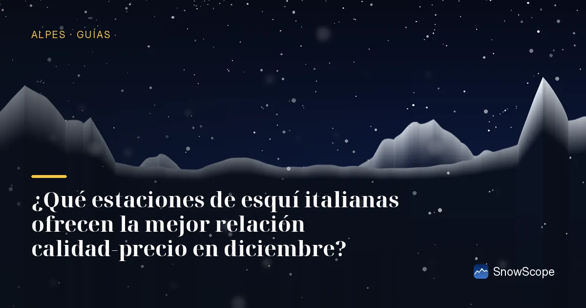

¿Qué estaciones de esquí italianas ofrecen la mejor relación calidad-precio en diciembre?
Para un viaje de fin de semana en coche desde la ciudad más cercana en diciembre de 2026, Livigno y Monterosa Ski combinan los precios verificados más bajos con nieve fiable en la parte alta, mientras que Pila mantiene una tarifa fija. Las cotas bajas suelen empezar justas de nieve. Nuestro historial de nieve de 46 inviernos pasados muestra cuándo la nieve en cota media se vuelve segura.
Consulta la previsión de nieve en tiempo real de Livigno en la app SnowScopeEspesor de nieve, alertas de nieve polvo y mapa 3D, gratis.
Equilibrar el precio del forfait y la nieve de diciembre
Sacar buen partido a tu dinero significa pagar menos en taquilla sin esquiar por pistas bajas con poca nieve. Livigno rebaja su forfait de adulto de 1 día a 51,50 EUR y el de 6 días a 258,50 EUR del 28 de noviembre al 18 de diciembre de 2026. Monterosa Ski ofrece el precio online verificado de 1 día más bajo en 40,00 EUR, subiendo a 71,00 EUR en fechas punta.
Pila cobra una tarifa única del 28 de noviembre de 2026 al 11 de abril de 2027: 60,00 EUR por 1 día y 322,00 EUR por 6 días. Courmayeur marca el forfait de 1 día en 75,00 EUR y el de 6 días en 396,00 EUR. No se comprobaron los precios de La Thuile ni de Sestriere.

Las primeras semanas del 1 al 14 de diciembre
En nuestro historial de nieve de 46 inviernos pasados, los remontes de la base sufren al principio. Del 1 al 7 de diciembre, Monterosa Ski a 1207 m alcanza 30 cm en el 0 % de los inviernos pasados, y Sestriere a 1600 m llega a 30 cm en el 26 %. Livigno a 1811 m alcanza 30 cm en el 30 % del 1 al 7 de diciembre y en el 39 % del 8 al 14 de diciembre.
Subir a cota media cambia por completo tu fin de semana. Del 8 al 14 de diciembre, La Thuile a 2038 m alcanza 30 cm en el 91 % de los inviernos pasados, Courmayeur a 1976 m llega al 87 %, Pila a 2128 m al 76 % y Livigno a 2301 m al 70 %. Los remontes más altos alcanzan 30 cm en al menos el 93 % en todas.
Las semanas siguientes del 15 al 28 de diciembre
La nieve se acumula rápido tras mitad de mes, aunque suben los precios dinámicos. Del 15 al 21 de diciembre, la cota media alcanza 30 cm en el 100 % de los inviernos pasados en La Thuile, el 98 % en Courmayeur y el 85 % en Livigno, Pila y Sestriere. Para el 22-28 de diciembre, incluso Monterosa Ski a 2118 m alcanza 30 cm en el 80 % de los inviernos pasados.
Elegir bien las fechas ahorra dinero en Livigno. Su forfait promocional de 51,50 EUR dura hasta el 18 de diciembre de 2026 y cubre casi toda la semana del 15 al 21 de diciembre, cuando la cota media mantiene 50 cm en el 50 % de los inviernos pasados y la cima a 2791 m mantiene 50 cm en el 87 %. Los forfaits suben a 66,00 EUR del 19 al 25 de diciembre de 2026 y luego a 74,50 EUR.
Comparativa directa entre estaciones
Livigno ofrece 83 km de pistas cartografiadas y 37 remontes cartografiados en 979 m de desnivel, con espesores habituales el 15 de diciembre de 27 cm a 1811 m, 45 cm a 2301 m y 81 cm a 2791 m. Monterosa Ski tiene 72 km de pistas cartografiadas, 37 remontes cartografiados y 1823 m de desnivel hasta 3030 m, donde el 15 de diciembre promedia 127 cm, mientras su base a 1207 m promedia 6 cm, desde 0 cm en un diciembre flojo hasta 24 cm en uno generoso.
Pila cuenta con 56 km de pistas cartografiadas y 16 remontes cartografiados en 1190 m de desnivel, con promedios de 33 cm, 44 cm y 79 cm el 15 de diciembre. Courmayeur tiene 42 km de pistas cartografiadas y 24 remontes cartografiados en 1545 m de desnivel, con promedios de 38 cm, 66 cm y 131 cm el 15 de diciembre, desde 60 cm en un diciembre escaso hasta 225 cm en uno abundante a 2749 m.
La Thuile suma 79 km de pistas cartografiadas, 17 remontes cartografiados y 1140 m de desnivel, promediando 67 cm a 2038 m en diciembre, mientras que Sestriere tiene 58 km de pistas cartografiadas, 22 remontes cartografiados y 1186 m de desnivel, promediando 51 cm a 2193 m; de ninguna de las dos se verificaron precios. Entre los primeros 15 inviernos y los últimos 15 inviernos, el espesor de diciembre en cota media subió en Livigno de 39 cm a 52 cm, en Sestriere de 43 cm a 57 cm, en La Thuile de 64 cm a 73 cm, en Pila de 42 cm a 49 cm y en Courmayeur de 63 cm a 69 cm, mientras Monterosa Ski se mantuvo en 37 cm.
Formas inteligentes de pagar menos
Si viajas en coche el fin de semana, puedes ajustar el calendario para gastar menos en remontes. Ir a Livigno entre el 8 y el 18 de diciembre de 2026 te asegura los 51,50 EUR una vez que las opciones de 30 cm en cota media superan el 70 %. Para finales de diciembre, la tarifa fija de 60,00 EUR de Pila mejora los 74,50 EUR de temporada alta de Livigno y los 75,00 EUR de Courmayeur.
Revisa el calendario online de Monterosa Ski para encontrar fechas a 40,00 EUR y esquía en los remontes altos. Con 0 cm en un diciembre flojo a 1207 m, planifica tu jornada en torno a la cota media de 2118 m y la cima de 3030 m.
Consejos para esquiadores
- Reserva Livigno entre el 8 y el 18 de diciembre de 2026 para conseguir el forfait de 1 día a 51,50 EUR o el de 6 días a 258,50 EUR, cuando las opciones de 30 cm en cota media alcanzan del 70 % al 85 %.
- Elige el forfait fijo de 1 día de 60,00 EUR en Pila del 22 al 28 de diciembre de 2026, cuando la cota media alcanza 30 cm en el 89 % de los inviernos pasados.
- Consulta Monterosa Ski online para días a 40,00 EUR y esquía alrededor de 2118 m y 3030 m en lugar de la base a 1207 m.
- Consulta el boletín de aludes antes de hacer fuera de pista por encima de 2723 m y revisa las webs oficiales para los precios de La Thuile y Sestriere.
Más mapas (sitios externos)
Referencias y créditos
- Livigno, official ski pass price list 2026-27 (PDF) www.livigno.eu/hubfs/tariffe_26-27.pdf
- Courmayeur Mont Blanc, official daily ski pass prices 2026-27 www.courmayeur-montblanc.com/skipass-e-tariffe/tariffe-giornaliere/
- Pila, official daily ski pass prices 2026-27 pila.it/en/skipass-pila/daily-skipass/
- Monterosa Ski, official dynamic pricing page 2026-27 monterosaski.eu/en/tariffazione-dinamica-monterosa-ski-19318
- SnowScope, December snow at three heights and today's snow map snowscope.app/
Sobre estas cifras
Cifras de nieve: histórico de nieve de SnowScope, 46 inviernos pasados (1980-81 a 2025-26) a tres alturas de cada estación (un modelo del pasado corregido por altitud: una estimación para una zona, no mediciones de la estación); cifras de diciembre calculadas con los espesores diarios de esos inviernos. Nieve actual y tendencia a dos semanas: previsiones de SnowScope (tendencia de ECMWF y GFS, un rango, no una promesa). Remontes y pistas: cartografía de OpenSkiMap. Precios: las páginas oficiales de abajo, consultadas el 2026-11-13; los precios pueden cambiar, compruébalos antes de reservar.
Citar este informe
Para investigación, docencia o prensa: cifras y gráficos reutilizables libremente bajo CC BY 4.0 con esta cita.
SnowScope (2026), ¿Qué estaciones de esquí italianas ofrecen la mejor relación calidad-precio en diciembre?, https://snowscope.app/blog/es/2026/11/italy-best-value-december-ski-weeks-2026.html, consultado el 2026-11-14
SnowScope (Atlas Labs). (2026, November 14). ¿Qué estaciones de esquí italianas ofrecen la mejor relación calidad-precio en diciembre?. SnowScope snow reports. https://snowscope.app/blog/es/2026/11/italy-best-value-december-ski-weeks-2026.html
BibTeX
@misc{snowscope2026italybestvaluedecembersk,
author = {{SnowScope (Atlas Labs)}},
title = {¿Qué estaciones de esquí italianas ofrecen la mejor relación calidad-precio en diciembre?},
year = {2026},
month = nov,
howpublished = {\url{https://snowscope.app/blog/es/2026/11/italy-best-value-december-ski-weeks-2026.html}},
note = {Published 2026-11-14 13:29 UTC; accessed 2026-11-14}
}· CC BY 4.0 · Métodos, datos y herramientas →
Livigno: nieve y temperatura según la altura, este invierno vs el pasado (herramientas) →
Sigue Livigno
Gratis: un aviso cuando llega la nieve y la previsión cada mañana.
Más partes de nieve

¿Puede un esquiador principiante y prudente confiar en Courmayeur en diciembre, cuando la media a media altura es de 60 cm de nieve según nuestro historial de inviernos pasados?

En 24 de 46 inviernos, las estaciones de la vertiente italiana y del sur de los Alpes franceses tuvieron un invierno relativamente mejor que la vertiente norte. El gráfico, los grandes años y el tiempo que hubo detrás.